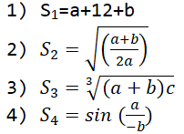

Задача 0. Обчислити значення виразів

Задача 1. Знайти суму, добуток та частку двох дійсних чисел. Результат
вивести у формі таблиці
Задача 2. Дано рік народження (дата: 1 січня) та поточний рік. Знайти
кількість років.
Задача 3. Дано вартість одиниці товару і кількість. Знайти загальну
вартість та ПДВ (5% від загальної вартості).
Задача 4. Дано довжину у сантиметрах. Визначати скільки це метрів і
кілометрів.
Задача 5. Дано кількість секунд, що пройшла від початку доби.
Визначити скільки це годин і хвилин.
Задача 6. З клавіатури вводяться вартість товару та кількість одиниць
3 товарів. Обчислити вартість кожного товару окремо та загальну
вартість. Вивести чек (як у супермаркеті) використовуючи елементи
розмітки.
Задача 7. Знайти суму випадкового номера місяця (від 1 до 12) та
випадкового номера дня (від 0 до 6).